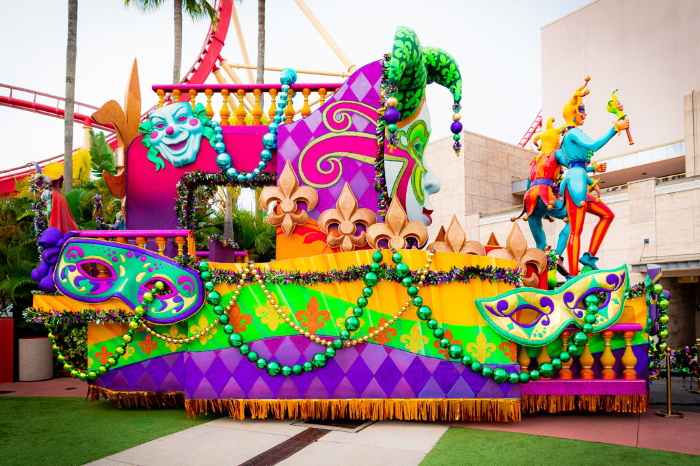
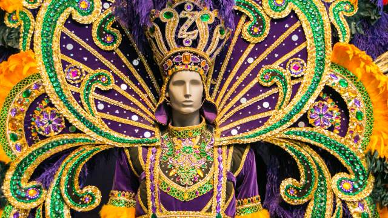

History of Mardi Gras
Mardi Gras, also known as Fat Tuesday, is a lively celebration that takes place before Lent. It has its roots in medieval Europe and was brought to the United States by French explorers in the 17th century. Originally, it was a way for people to indulge in rich foods and festivities before the period of fasting during Lent. The first American Mardi Gras celebration occurred in 1703 in Mobile, Alabama, but it was in New Orleans that the festival truly grew into the vibrant and extravagant event we know today. Over time, it evolved into the grand festival we see now, especially in New Orleans, which is famous for its extravagant parades, colorful masks, and festive atmosphere. New Orleans became the epicenter of Mardi Gras, blending French, African, Spanish, and American cultural influences to create a one-of-a-kind celebration of music, food, and revelry.
Traditions and Festivities
Parades & Floats
The streets of New Orleans come alive with massive, colorful floats that glide through the city. Each float is intricately designed and often follows a unique theme, ranging from mythology and history to pop culture and social commentary. The floats are a visual feast, with elaborate decorations and vibrant colors. Riders on the floats toss beads, coins (doubloons), and trinkets to the crowds, a tradition that has become synonymous with Mardi Gras. Many revelers try to catch as many beads as possible, often by shouting “Throw me something, Mister!” in hopes of receiving a token. The parades are organized by krewes, social organizations that form the backbone of Mardi Gras celebrations. These krewes host parties, fundraisers, and community events throughout the year, and each krewe has its own traditions, royalty, and themes for their floats. The parades are also a time for revelers to showcase their own creativity, with people decorating their cars, homes, and even themselves to take part in the spectacle.
Costumes & Masks
People dress in brightly colored costumes, often in the traditional purple, green, and gold (symbolizing justice, faith, and power). Many wear elaborate masks to add mystery and excitement to the festivities. The tradition of wearing masks comes from the French custom of celebrating Mardi Gras with anonymity, allowing people to indulge in revelry without social constraints. Elaborate costumes, often reflecting the themes of the parades, can range from whimsical and lighthearted to complex, artistic masterpieces. Some attendees wear “throws”—items like beads, cups, and small toys—that are tossed during the parades. These costumes, along with the masks, help create an atmosphere of fun and escapism, as participants are invited to step out of their daily roles and take on new identities for the day.
King Cake
A sweet, cinnamon-filled pastry, King Cake is a beloved Mardi Gras treat. It is topped with purple, green, and gold sugar, and inside is a tiny baby figurine. The cake’s round shape symbolizes unity, and it is often shared among friends, family, and coworkers. Whoever finds the baby in their slice is said to have good luck and is responsible for bringing the next cake! This tradition dates back to the ancient Roman festival of Saturnalia and has become a fun and delicious way to celebrate the season. The King Cake is typically eaten during the entire Carnival season, starting on Twelfth Night in early January and continuing until Fat Tuesday. There are many variations of the King Cake, some filled with cream cheese, chocolate, or fruit, reflecting the creativity and diversity of Mardi Gras food traditions.
Music & Dancing
The sound of jazz, brass bands, and zydeco music fills the streets as people dance and celebrate. Music is at the heart of Mardi Gras, with live bands performing throughout the city, especially during the parades. Marching bands, playing everything from traditional jazz to modern hits, bring their own energy and flair to the festivities. The high-energy music, combined with the festive atmosphere, encourages everyone to join in the dancing, whether in the streets or at one of the many parties hosted during the Carnival season. Zydeco, a musical genre that blends Creole, Cajun, and African American influences, is also a signature sound of Mardi Gras, especially in Louisiana. People of all ages and backgrounds come together to celebrate in a vibrant display of unity through music and movement. The music often sets the tone for the parades, with many floats accompanied by live musical performances that further amplify the celebratory spirit of Mardi Gras.
Experience the Magic of Mardi Gras
Discover the traditions, parades, and festivities of Mardi Gras with these videos and links: